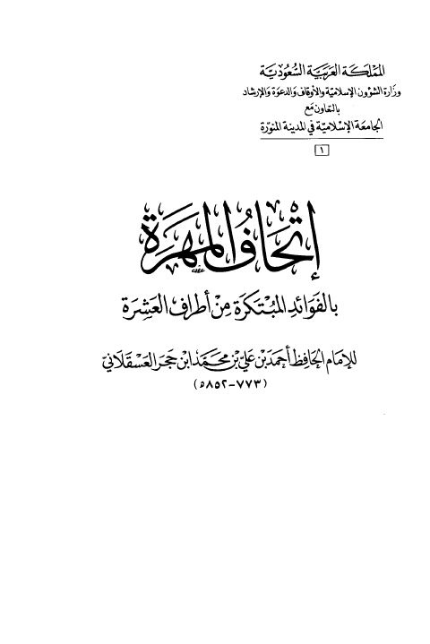
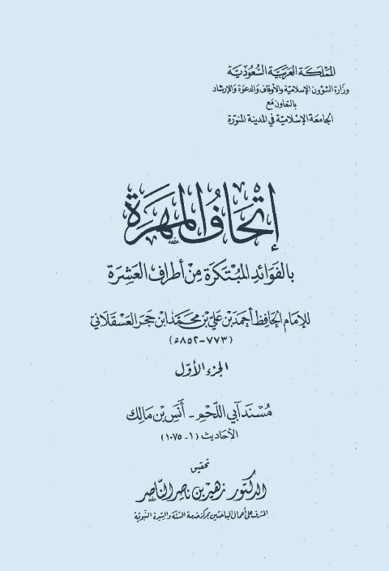
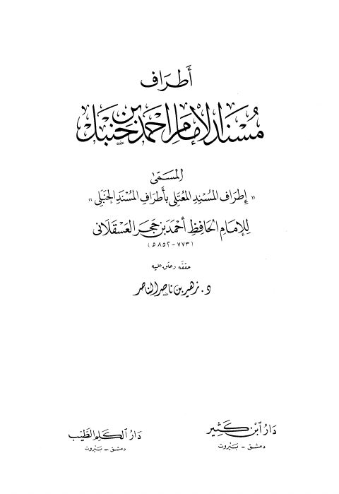

إتحاف المهرة بالفوائد المبتكرة من أطراف العشرة- أجزاء إتحاف المهرة بالفوائد المبتكرة من أطراف العشرة- أجزاء أحمد بن علي بن حجر العسقلاني
إتحاف المهرة بالفوائد المبتكرة من أطراف العشرة- مدمجة إتحاف المهرة بالفوائد المبتكرة من أطراف العشرة- مدمجة أحمد بن علي بن حجر العسقلاني
أطراف مسند الإمام أحمد بن حنبل المسمى إطراف المسند المعتلي بأطراف المسند الحنبلي أطراف مسند الإمام أحمد بن حنبل المسمى إطراف المسند المعتلي بأطراف المسند الحنبلي أحمد بن علي بن حجر العسقلاني